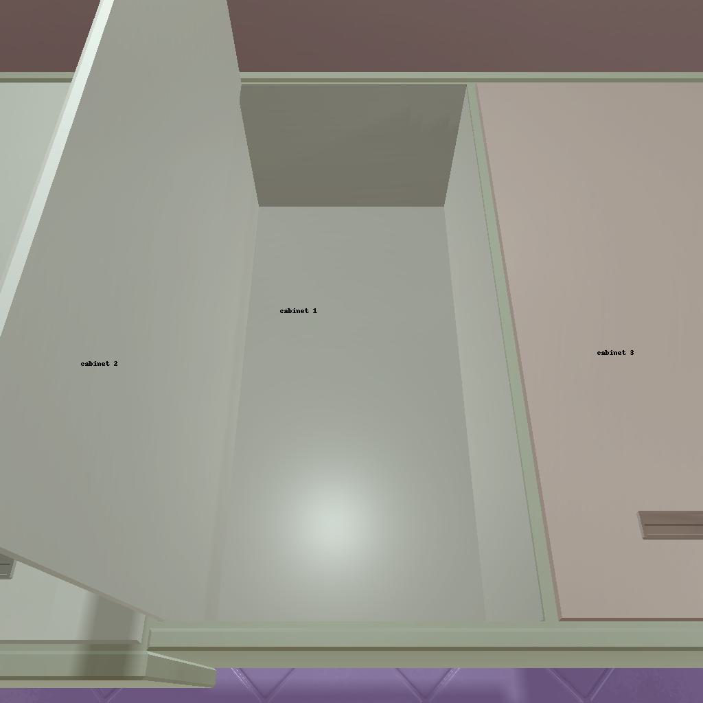

---------------------------------------------------------task: 12---------------------------------------------------------
--------------------------------------------------------------------------------------------------------------------------------------------------------------------
--------------------------------------------------------------------------------------------------------------------------------------------------------------------
Step:--------------------------------------------------------------------------19-------------------------------------------------------------------------------
----------------------------------------
VLM Prompt:
Image1:
**Instruction**
1. Analyze the provided image to identify all visible household objects, focusing on those relevant to the task description "clean some tomato and put it in countertop."
2. Use the analysis of the image and the task hint "The agent must find an object of the desired type, pick it up, go to a sink or a basin, clean the object with a sink or basin, and then find the correct location to place it and put it down there. The agent does not need to use soap bottle or faucet to clean the object, and the agent just needs to do action that is "clean the object with the sink or sink basin"." to answer the question: what is the most reasonable action in the choices for the task description "clean some tomato and put it in countertop"?
4. Decide and write the answer using the template: The answer is: (i): , where i is the real number. If there is no desired object in the image, search every place based on **Initial Observation** to find the object. And if no one is exactly correct, choose a similar answer.
**Initial Observation**
You are in the middle of a room. Looking quickly around you, you can see cabinet (1-6), microwave (1), countertop (1-2), coffeemachine (1), toaster (1), sink (1), sinkbasin (1), fridge (1)
**Answer Choices**
(1): go to cabinet 1
(2): go to cabinet 3
(3): go to microwave 1
(4): go to cabinet 4
(5): go to cabinet 5
(6): go to cabinet 6
(7): go to countertop 1
(8): go to coffeemachine 1
(9): go to toaster 1
(10): go to countertop 2
(11): go to sink 1
(12): go to sinkbasin 1
(13): go to fridge 1
(14): open cabinet 2
(15): close cabinet 2
**Answer**
Let's think step by step by following the instructions.
----------------------------------------
----------------------------------------
Original Response:
First, we need to find a tomato. Tomatoes are generally kept in the fridge or on the countertop if they are about to be used.
Next, we need to clean the tomato, which requires us to go to a sink or sink basin.
Finally, we need to put the cleaned tomato on the countertop.
Based on the initial observation, we don't see any tomatoes in the provided image of the open cabinet. Therefore, we need to search every place. We can eliminate options that are not relevant to finding a tomato, such as the microwave (3), coffeemachine (8), and toaster (9).
Among the remaining options, the fridge (13) is the most likely place to find a tomato. After finding the tomato, we would then go to the sink or sink basin (11 or 12) to clean it, and then to the countertop (7 or 10) to place it down.
The answer is: (13): go to fridge 1.
----------------------------------------
----------------------------------------
>>> Refine Original VLM Response and Get Pure Action: go to fridge 1
----------------------------------------
-----------------------------------------------------------------
Running time: 43.62761211395264 seconds
Total Money: 4.055130000000001
-----------------------------------------------------------------
-----------------------------------------------------------------
Text Observation:You arrive at loc 13. The fridge 1 is open. On the fridge 1, you see a apple 1, and a potato 1.
-----------------------------------------------------------------
UNSUCCEED